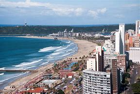
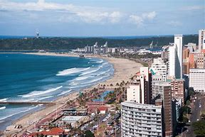

DURBAN BEACH

Thabana Travel Agency
Travel Destinations is your go-to online resource for discovering, exploring, and experiencing some of the most beautiful and exciting locations around the world. Whether you’re planning your next getaway, looking for inspiration, or simply dreaming about future travels, our website provides curated content on stunning destinations, helpful travel tips, and insights into unique cultural experiences.
DURBAN BEACH
Luxury hotels in Durban offer an exceptional blend of comfort, sophistication, and stunning ocean views. Renowned for their elegant designs and world-class amenities, these hotels cater to discerning travelers seeking a memorable experience. Guests can enjoy spacious rooms adorned with modern furnishings, indulgent spa services, fine dining options featuring local and international cuisine, and exclusive access to pristine beaches. Many luxury hotels also provide personalized services, such as concierge assistance and tailored experiences, ensuring a seamless stay. With their prime locations near vibrant attractions and the scenic coastline, luxury hotels in Durban promise an unforgettable escape in one of South Africa's most dynamic cities.
HILTON DURBAN HOTEL
The Hilton Durban Hotel is a modern 4-star property located in the heart of Durban, South Africa, just steps away from the beachfront and the International Convention Centre. Offering spacious guest rooms and suites with contemporary decor, the hotel features a variety of facilities including an on-site restaurant, bar, outdoor swimming pool, and a fitness center. With extensive conference and event spaces, it caters well to business travelers, while its proximity to attractions like uShaka Marine World makes it ideal for leisure guests as well. Additional amenities include a spa, high-speed internet, and valet parking, ensuring a comfortable stay for all visitors.
PAVILION HOTEL NORTH BEACH
Pavilion Hotel North Beach offers a captivating blend of modern comfort and coastal charm, nestled just steps away from the stunning shoreline. This inviting hotel features spacious, well-appointed rooms adorned with contemporary decor, ensuring a relaxing retreat for guests. With amenities such as an outdoor pool, complimentary breakfast, and easy access to local attractions, Pavilion Hotel North Beach is an ideal destination for both leisure and business travelers. The friendly staff is dedicated to providing exceptional service, making every stay memorable. Enjoy the perfect mix of beachside relaxation and urban excitement at this delightful getaway.
BLUE WATERS HOTEL
The Blue Water Hotel in Durban is a charming beachfront property that offers stunning views of the Indian Ocean. It features comfortable accommodations, including well-appointed rooms and suites, many with private balconies. Guests can enjoy amenities such as a swimming pool, a restaurant serving local and international cuisine, and direct access to the beach.
Shuttles around a destination play a crucial role in enhancing accessibility and convenience for visitors. They provide an easy way to navigate areas with limited or expensive parking, making it simpler for tourists to explore attractions without the hassle of driving. Additionally, shuttles improve accessibility for individuals with mobility challenges, ensuring that everyone can enjoy the destination. By reducing the number of individual vehicles on the road, shuttle services contribute to sustainability by decreasing traffic congestion and lowering emissions. They also offer a cost-effective alternative to renting cars or using rideshare services, making travel more affordable. Furthermore, shuttles can encourage tourism by facilitating access to a wider range of attractions, ultimately enriching the overall visitor experience while promoting safety in unfamiliar areas.
Durban Risksha Bus
The Durban Riksha Bus is a unique and vibrant transportation service that enhances the travel experience in Durban. This hop-on, hop-off bus service takes passengers on a scenic route through the city, stopping at key attractions, beaches, and cultural sites. With an emphasis on convenience and accessibility, the Riksha Bus allows travelers to explore at their own pace, making it an ideal choice for tourists and locals alike. The buses are designed for comfort and feature informative commentary, providing insights into Durban's rich history and diverse culture. Whether you're looking to visit landmarks, shop, or enjoy the local cuisine, the Durban Riksha Bus offers an enjoyable and flexible way to discover the city.
Ez Shuttle Durban
EZT Shuttle in Durban is a premier transportation service that specializes in providing reliable and efficient shuttle options for both locals and tourists. Catering to various needs, EZT Shuttle offers airport transfers, intercity travel, and personalized tours around Durban and its surroundings. With a fleet of well-maintained vehicles and professional drivers, the service ensures comfort and safety for all passengers. EZT Shuttle is known for its punctuality and excellent customer service, making it a popular choice for anyone looking to navigate the vibrant city of Durban with ease. Whether you're heading to the beach, a business meeting, or exploring local attractions, EZT Shuttle is dedicated to delivering a smooth travel experience.
East Coast Shuttle Services

East Coast shuttle services in Durban offer reliable and convenient transportation options for both locals and visitors. These services connect key areas within the city, as well as popular destinations like the Durban International Airport and nearby attractions along the coast. Shuttle operators provide a range of options, from shared rides to private transfers, ensuring flexibility to suit various needs and budgets. With comfortable vehicles and professional drivers, passengers can enjoy a hassle-free journey while taking in the scenic views of Durban's vibrant coastline. Whether for business or leisure, East Coast shuttles are an excellent choice for seamless travel in the region.